| 日付 | 2015年11月3日（火） |
|---|---|
| 山域 | 奥秩父 |
| メンバー | 家族（長女・4歳） |
| 山行形態 | 子連れ日帰り |
| アクセス | 車 |
| ルート (Map) | 駐車場 (8:58) - (9:34) 法印ノ滝 - (10:13) 下部分岐点 - (11:07) 上部分岐点 - (11:18) 南天山 (12:03) - (12:15) 上部分岐点 (12:24) - (13:06) 下部分岐点 - (13:34) 法印ノ滝 (13:45) - (14:08) 駐車場 |
息子が風邪気味のため、本日は娘と2人で山に行くことにする。
目的地は南天山。秩父の奥地にある目立たない山だ。
家から少々遠いため、これまで敬遠してきたが、
今回は娘と2人きりのため、行ってみることにする。
中津川渓谷沿いの道を遡って行く。途中で車を停めて紅葉を眺める。
カメラを構えている人があちらこちらに見られる。
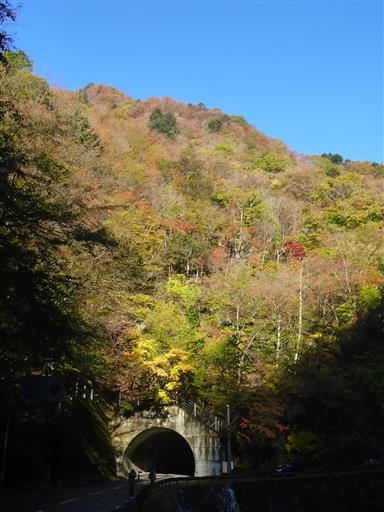
未舗装の道路を走り、路肩が広くなった小さな駐車場に車を停める。標高820m。
紅葉の時期だからか、意外にも既に何台か車が停まっている。
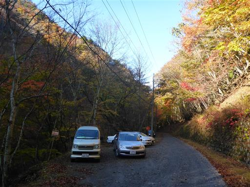
すぐ側の登山口から登り始める。
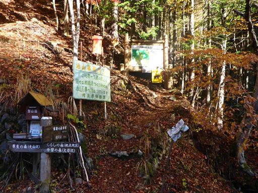
登山道は狭い。右側は崖のため、子供を歩かせるには怖い道だ。
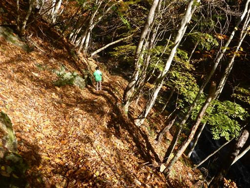
すぐに沢沿いの道になる。石がたくさん転がっていて、案外難易度の高い登山道だ。
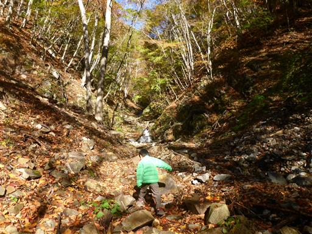
何度も木橋を渡る。娘は手を繋がなくても渡れるようになった。
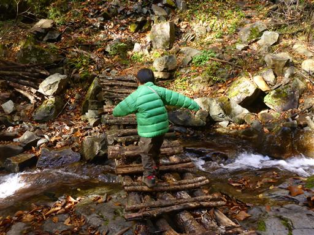
風が吹くと色付いた葉が落ちてくる。
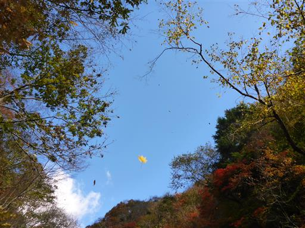
法印ノ滝に到着。小さいが美しい滝で、この山のシンボル的な存在だ。
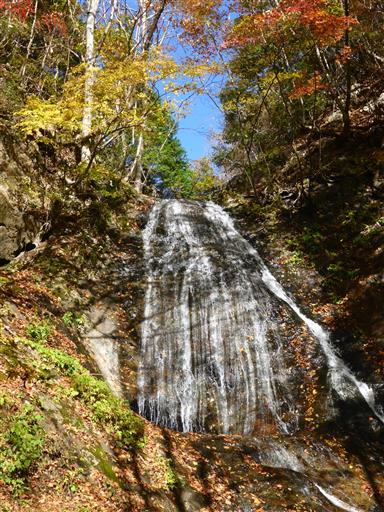
周囲は非常に紅葉が美しい。
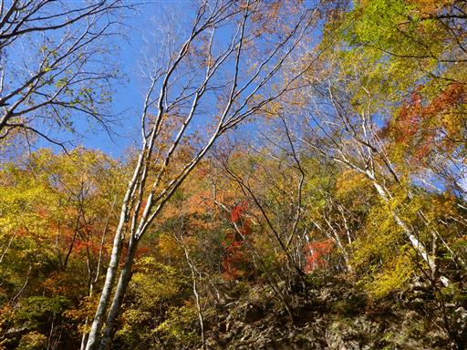
滝を高巻く。上部から法印ノ滝を眺められる。
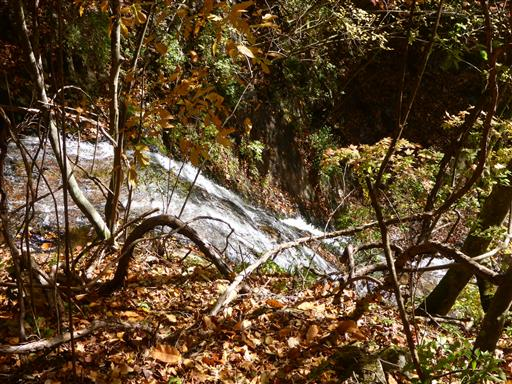
娘は地面に落ちている枝付きの葉を見つけて遊び始める。
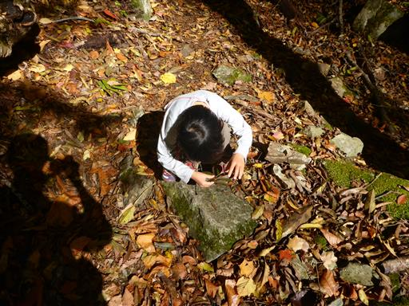
だいぶ上流まで遡り、水量が少なくなってくる。
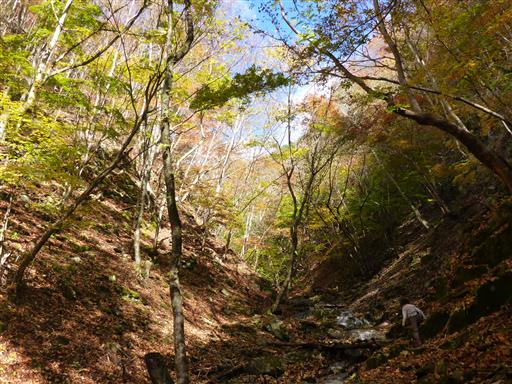
登山道の分岐点に到着。沢沿いの道と分かれて山頂への近道を選択する。
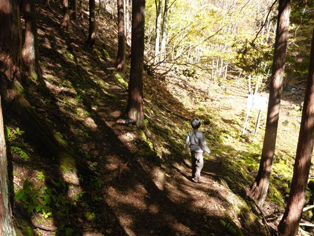
この辺りまで来ると、もう沢は涸れている。
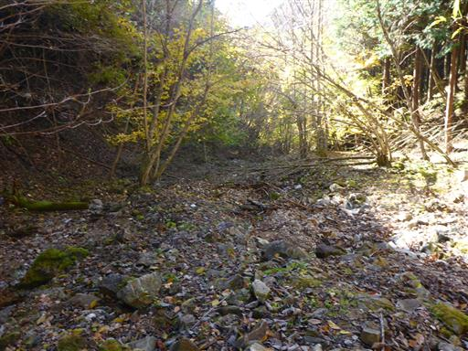
ここからは急斜面に付けられたジグザグ道を登って行く。辺りは檜の植林地帯だ。
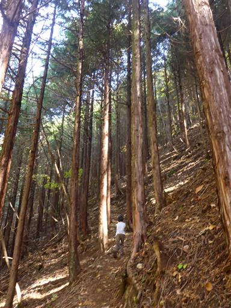
斜面を登りきると尾根に飛び出す。ここが沢コースとの合流地点になっている。
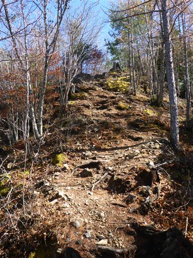
ここからは尾根道を一登りだ。
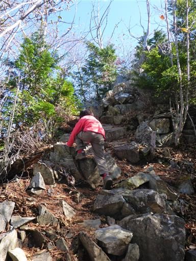
山頂直下の岩場を登る。
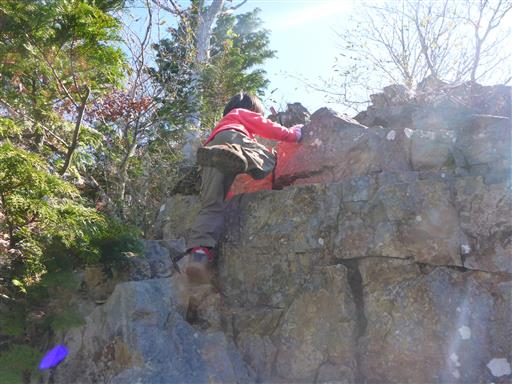
南天山の山頂に到着する。標高1483m。
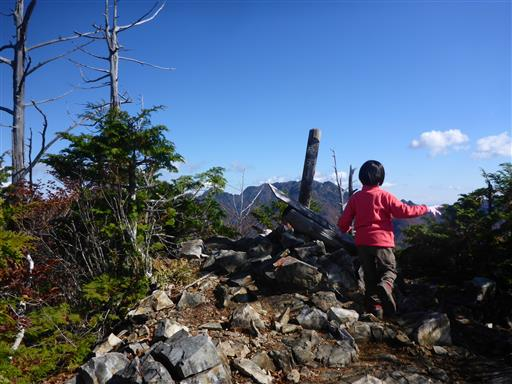
意外にも山頂からは大展望が広がる。
目の前に見える山々は、どれもこれもギザギザしている。
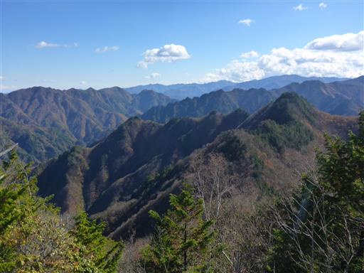
正面に見えるのはギザギザの代表格、両神山だ。
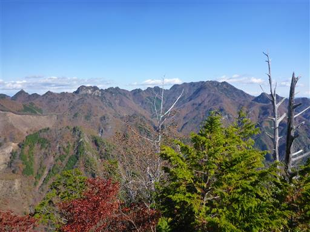
北方の尾根にはとんがり帽子の山が並んでいる。
左のピークは宗四郎山、右のピークは以前登った大ナゲシだ。
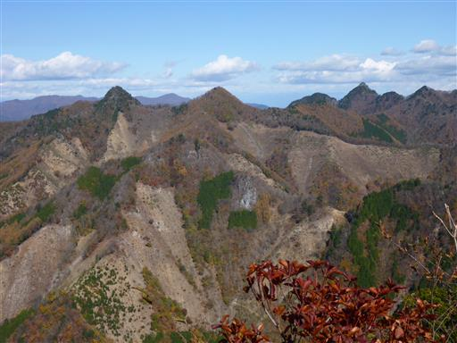
娘は「あの白い山に行きたい」と言っている。
岩壁が美しい赤岩岳だが、娘の実力ではまだ無理だろう。
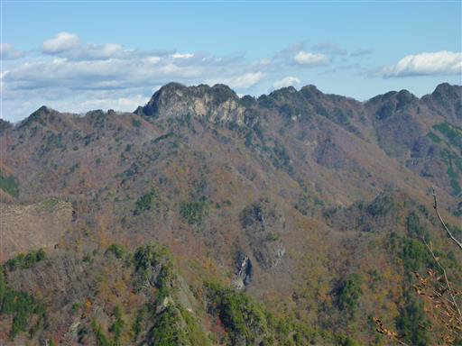
遠くに見えるのは奥秩父の秘峰、和名倉山だ。
あまり特徴のない山容だが、思い入れのある山のため一目でそれと分かる。
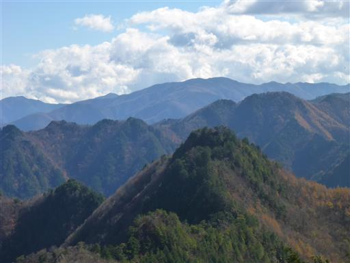
南方に見えるのは奥秩父の三宝山。埼玉県の最高峰だ。
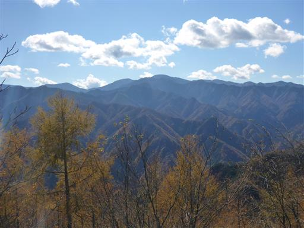
山頂はさほど広くないが、続々と登山者がやって来て10人位になる。
これほど人気の山だとは思わなかった。
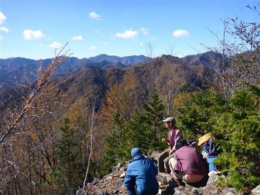
昼食をとったら下山開始。慎重に岩場を下る。
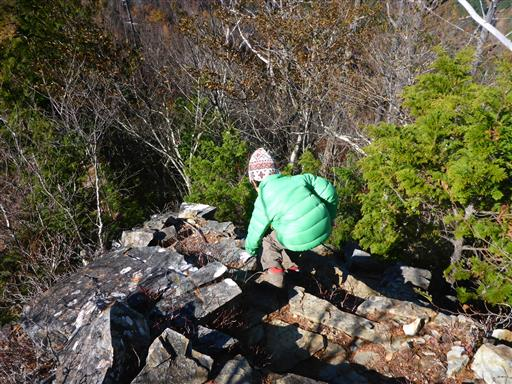
この尾根を辿って行くと、左右に伸びる群馬埼玉国境稜線に至る。
奥秩父から伸びる長大な尾根だが整備された登山道はない。右端に見えるのは帳付山だ。
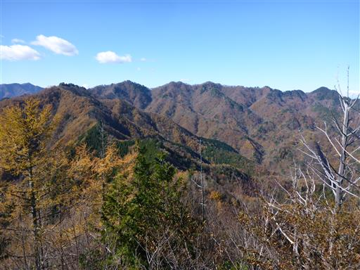
分岐点に到着。登りに使った近道コースか遠回りコースか
どちらを下りたいか娘に聞いたら、遠回りコースが良いと言う。
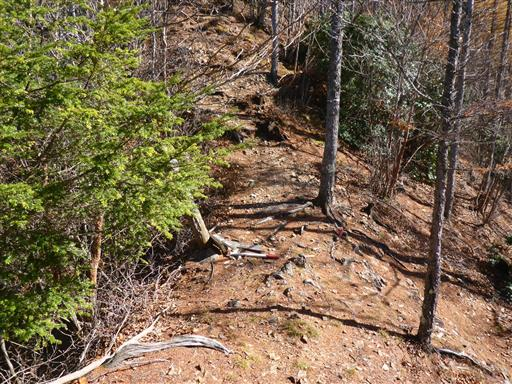
尾根道を直進する。急な下りの後に登りになったところで
「やっぱり近道が良かった」と言い出したため、素直に引き返すことにする。
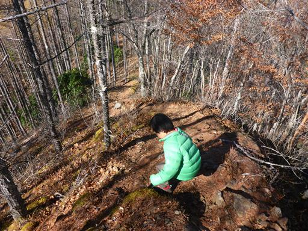
分岐点まで戻ったら、斜面のジグザグ道を下る。
周囲は黄葉した唐松林が広がっている。
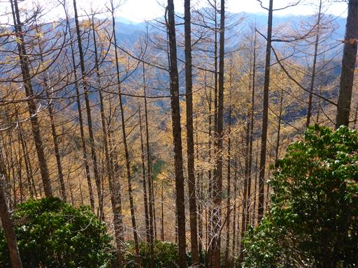
檜の実が地面にいっぱい落ちている。息子へのお土産にいくつか拾う。
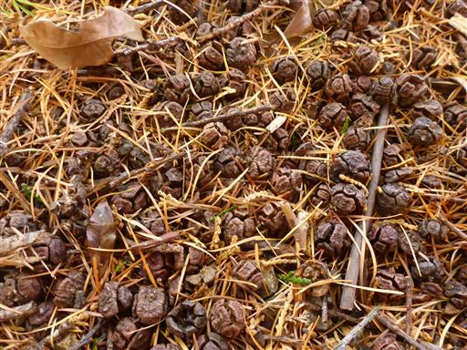
斜面を下りきったら、あとは沢沿いの道を下るのみ。水に触ると結構冷たい。
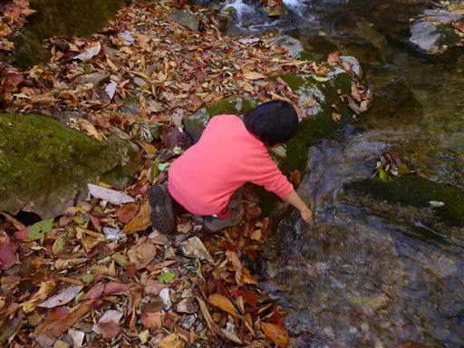
滑らかな岩盤の上を、勢いよく水が流れている。
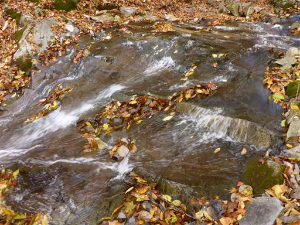
再び法印ノ滝に戻ってくる。ここでおやつ休憩をとる。
午後になると滝は日影に入ってしまう。
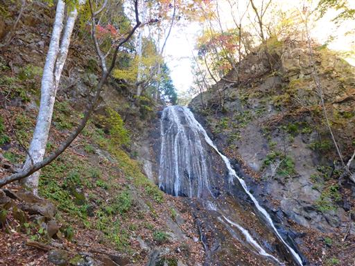
最後の行程を歩き、無事下山する。
思った以上に良い山であり、思った以上に賑わっている山だった。
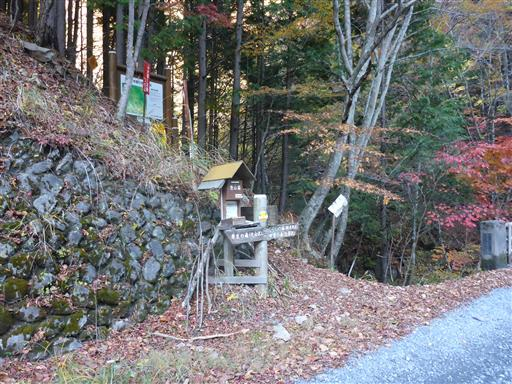